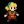

| - | Character | Speed | - | - | Score | - |
|---|---|---|---|---|---|---|
| Aria | 21:40.57 | 1009th | 7035 | 97th | ||
| Bard | - | - | 13530 | 311th | ||
| Bolt | 25:56.96 | 1535th | 2576 | 754th | ||
|  | Cadence | 13:13.96 | 1154th | 8298 | 1610th | |
| Diamond | - | - | 5590 | 846th | ||
| Dorian | 32:39.33 | 1857th | 5184 | 80th | ||
| Dove | 16:35.44 | 3251st | 1107 | 83rd | ||
| Eli | 37:48.08 | 3051st | 6173 | 87th | ||
| Mary | 34:33.29 | 1573rd | 7026 | 45th | ||
| Melody | 23:33.01 | 2306th | 7078 | 410th | ||
| Monk | 34:52.99 | 1705th | 6802 | 142nd | ||
| Nocturna | 14:29.80 | 1441st | 12276 | 703rd | ||
| Tempo | 15:41.78 | 1903rd | 7264 | 116th | ||
| Coda | - | - | 2 | 507th | ||
| Story | 1:36:14.35 | 418th | 21541 | 89th | ||
| 9char | 4:35:09.99 | 223rd | 56816 | 14th | ||
| 13char | - | - | 6835 | 238th |
| - | Character | HrdSp | NRSp | RndSp | PhsSp | MysSp | - | HrdSc | NRSc | RndSc | PhsSc | MysSc | DLess |
|---|---|---|---|---|---|---|---|---|---|---|---|---|---|
| Aria | - | - | - | - | - | - | - | - | - | - | - | ||
| Bard | - | - | - | - | - | - | - | - | - | - | - | ||
| Bolt | - | - | - | - | - | - | - | - | - | - | - | ||
| Cadence | 41:49.98829th | 38:24.741235th | 40:45.601531st | 34:14.531005th | 39:54.98570th | 873366th | 661756th | 9998148th | 1168313th | 760220th | - | ||
| Diamond | - | - | - | - | - | - | - | - | - | - | - | ||
| Dorian | - | - | - | - | - | - | - | - | - | - | - | ||
| Dove | - | - | - | - | - | - | - | - | - | - | - | ||
| Eli | - | - | - | - | - | - | - | - | - | - | - | ||
| Mary | - | - | - | - | - | - | - | - | - | - | - | ||
| Melody | - | - | - | - | - | - | - | - | - | - | - | ||
| Monk | - | - | - | - | - | - | - | - | - | - | - | ||
| Nocturna | 46:33.143440th | - | - | - | - | 6115845th | - | - | - | - | - | ||
| Tempo | - | - | - | - | - | - | - | - | - | - | - | ||
| Coda | - | - | - | - | - | - | - | - | - | - | - |
Last Updated:2021/05/22 15:20